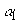

|
В. И. ЕЛИСЕЕВ ВВЕДЕНИЕ В МЕТОДЫ ТЕОРИИ
ФУНКЦИЙ ПРОСТРАНСТВЕННОГО КОМПЛЕКСНОГО ПЕРЕМЕННОГО |
|
6.3. Краткие сведения из теории альфа распада.
К числу радиоактивных процессов относится
a -распад. a-Распадом называется самопроизвольный (спонтанный) процесс испускания ядром ядра ( a -частицы). При этом освобождаемая энергия идет на изменение кинетической энергии a -частицы и дочернего ядра ЭнергияСреднее значение энергии 6МэВ. Особенности
a -Распада экспериментально установлены и могут быть рассмотрены под углом зрения циклонной модели. Расчет радиоактивных превращений ядер путем -электронного ,Все это говорит о том, что
a -радиоактивность связана со структурой ядер второй половины периодической таблицы и изотопов тех ядер, для которых коэффициент .Точные методы измерения энергии
a -частицы открыли тонкую структуру спектров. Было отмечено, что спектр испускаемых a -частиц имеет наибольшее количество линий для тех ядер, дочерние ядра которых обладают ярко выраженной несферичностью.Ядра наряду с обычной группой частиц испускают длиннопробежные  -частицы.
-частицы.
|
Группы a -частиц |
|
Содержание % |
Группы a -частиц |
МэВ |
Содержание % |
|
6,086 |
27,2 |
5,622 |
0,15 |
||
|
 |
6,047 |
69,9 |
5,603 |
1,1 |
|
|
5,765 |
1,7 |
5,481 |
0,016 |
||
|
8,78 |
100 |
10,422 |
0,002 |
||
|
9,492 |
0,0035 |
10,543 |
0,018 |
||
|
7,680 |
100 |
9,779 |
|||
|
8,277 |
|
|
9,905 |
|
|
|
8,938 |
|
10,074 |
|||
|
9,065 |
10,146 |
||||
|
|
9,313 |
|
10,326 |
|
|
|
9,489 |
10,526 |
||||
|
|
9,657 |
|
|
Тонкая структура
a -частиц встречается часто. Несферическое ядро обладает наибольшей энергией возбуждения. Связано это с вращением ядра. Возбужденные состояния ядер характеризуются значениями энергии связи Е, моментом количества движения L, четности Р, изоспином Т. a -Распад с близкими по значениям энергиямДлиннопробежные частицы большой кинетической энергии обнаружены при распаде ядер . Конечным продуктом распада в обоих случаях является ядро .Для этих ядер имеем высокую разность в энергиях связи между исходными ядрами и продуктами распада.
Энергетические исследования на основе формулы Вейцзеккера показывают, что энергия распада становится положительной , начиная с ядер Z>73. Причем чем выше заряд ядра Z, тем выше кинетическая энергия 
В соответствии с этой формулой капельная модель объясняет
a -распад тяжелых ядер с большим количеством нейтронов. Однако это результат завышен , так как наблюдаются ядра с a -распадом у редкоземельных элементов. В [] приведена кривая энергииТеория
a -распада связывает между собой кинетическую энергию частицыЕсли энергия
a -частицы строго фиксирована 4-9МэВ, то периоды полураспада изменяются в очень широком пределе отдо лет. Эта экспериментальная особенность установлена в виде закона Гейгера-Нетолла и объяснена теоретически с помощью механизма квантомеханического процесса прохождения микрочастиц через потенциальный кулоновский барьер.В преодолении кулоновского барьера
a -частицей при распаде теоретическая физика видит механизм a -распада. Если энергия ядра больше суммы энергий ядра –продукта и a -частицы, то распад энергетически возможен. Однако опыты Резерфорда установили, что энергия системы на границе ядра a -частицы при рассеивании выше энергии как ядра так и кинетической энергии последней. a -Частица с энергией 4-9МэВ должна преодолеть кулоновский барьер высотой с энергией, превышающей ее собственную в 2, 3 раза.Высота кулоновского барьера В может быть рассчитана по ряду формул . Простейшей формулой является Для ядра урана дает величину в 30 МэВ. Величина кулоновского барьера плохо определенный параметр из за неопределенности формы ядра. Теория утверждает, что прозрачность кулоновского барьера несферического ядра в различных местах разная и особенно велика у его концов. Отношение большой и малой полуосей эллипсоида, форму которого имеют несферические ядра, достигает до величины 1,3. В таком случае кулоновский барьер может быть занижен в 1,3 раза . Однако и эта величина достаточно высока.
Для решения этого вопроса и был разработан так называемый механизм туннельного перехода или прохождение
a -частицы через потенциальный барьер. Механизм туннельного перехода применяется в теоретической физике не только при обосновании a -распада. Основан он на волновой механике Шредингера и на решении его уравнения .Это краткий обзор необходимых сведений для дальнейшего по теории и экспериментальным данным
a -распада. Теория a -распада далека от своего завершения. В теории определяющим фактором распада является просачивание частицы через потенциальный барьер. Время распада интерпретируется как последовательные попытки a -частицы проникнуть через барьер.Теоретическая физика не предложила процесс, происходящий в ядре до распада, и структурных изменений в нем при возбуждении. Величина возбуждения от внешнего воздействия не увязана со структурной перестройкой ядра, кроме изменения его формы.
Мини оглавление:
[0], [1.1.1, 1.1.2, 1.1.3, 1.1.4, 1.1.5, 1.1.6, 1.1.7, 1.1.8, 1.2, 1.2.1, 1.2.2, 1.2.2.a, 1.2.2.b, 1.2.2.c, 1.2.2.d, 1.2.2.e, 1.2.2.f, 1.2.2.g, 1.2.2.h, 1.2.3, 1.3.1, 1.3.2, 1.3.3, 1.3.4, 1.3.5, 1.3.6, 1.4.1, 1.4.2, 1.5, 1.6, 1.7.1, 1.7.2, 1.7.3.1, 1.7.3.2, 1.7.3.3, 1.7.4.1, 1.7.4.2, 1.8.1], [2.1, 2.2],[3.1, 3.2, 3.3, 3.4.1, 3.4.2, 3.4.3, 3.4.4, 3.4.5],[4.1, 4.2, 4.3, 4.4],[5.1, 5.1.Рис.52, 5.2, 5.3, 5.4, 5.4.Т1, 5.4.Т2, 5.4.Т3, 5.5.1, 5.5.2, 5.5.3, 5.5.4],[6.1.1, 6.1.2, 6.2.1, 6.2.2, 6.2.3, 6.2.4, 6.2.5, 6.3, 6.4.1, 6.4.2, 6.5.1, 6.5.2],[7.1, 7.2, 7.3, 7.4, 7.5, 7.6, 7.7.1, 7.7.2, 7.8.1, 7.8.2, 7.8.3, 7.9],[8.1, 8.2.1, 8.2.2, 8.3, 8.4, 8.5, 8.6, 8.6.T1, 8.7, 8.8.1, 8.8.2, 8.8.3, 8.9.1, 8.9.2, 8.9.3, 8.10, 8.10.T2, 8.10.T3],[9.1, 9.2, 9.3, Рис.88, 89, 90, 91, 92, 93, 94, 95, 96, 97, 98, 99, 100],[10.1, 10.2, 10.3, 10.4, 10.5, 10.6, 10.7, 10.8, 10.9, 10.10, 10.11, 10.12, 10.13, 10.14, 10.15.1, 10.15.2, 10.16.1, 10.16.2, 10.17, 10.18],[11]
Размещенный материал является электронной версией книги: © В.И.Елисеев, "Введение в методы теории функций пространственного комплексного переменного", изданной Центром научно-технического творчества молодежи Алгоритм. - М.:, НИАТ. - 1990. Шифр Д7-90/83308. в каталоге Государственной публичной научно-технической библиотеки. Сайт действует с 10 августа 1998.
E-mail: mathsru@gmail.com